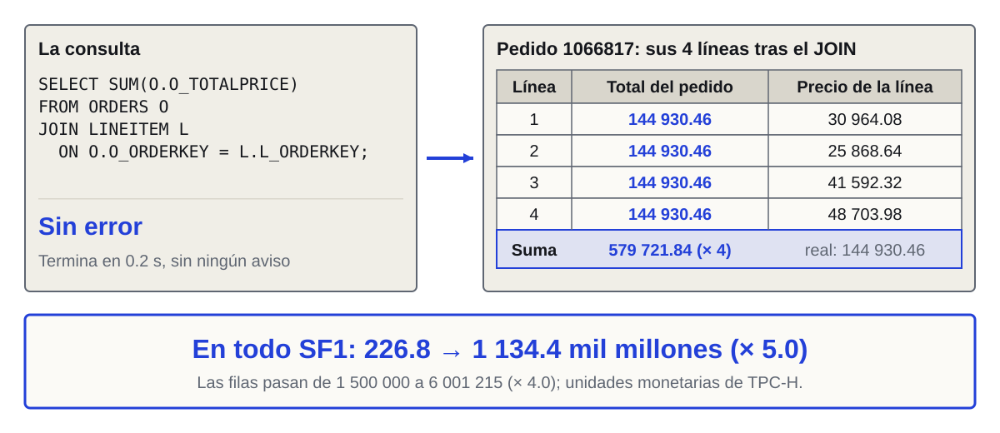
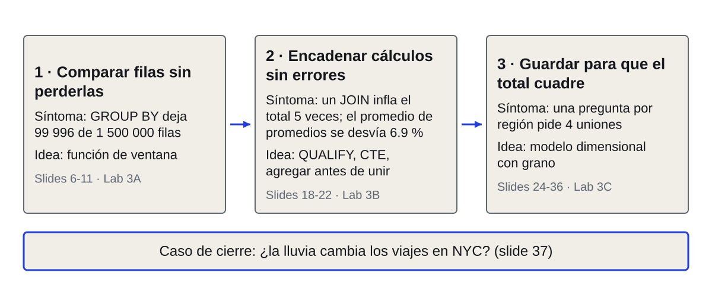
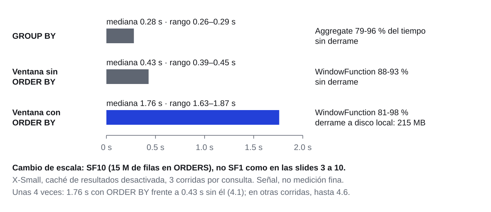
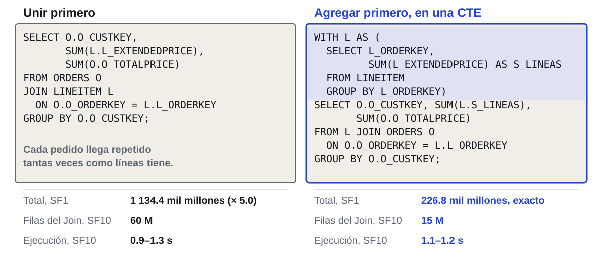
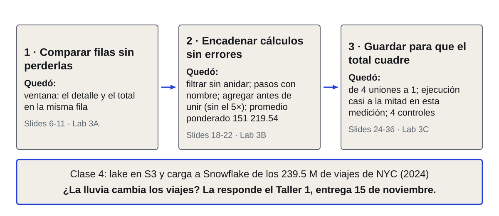

Big Data e Ingeniería de Datos
Clase 3 · Responder bien y guardar para que el total cuadre
Posgrado · UdeM · 9 nov 2026
La clase 2 terminó con una idea: leer rápido es leer menos (600 M de valores en 0.6 s, una sola columna comprimida repartida en 1 022 micro-particiones). Hoy la pregunta cambia: ya leemos rápido; ¿cómo respondemos bien y cómo guardamos los datos para que el total sea correcto? El día tiene cinco tramos: ventanas y Lab 3A; una parada en AWS (pasos 5 a 9 de la guía) y el descanso; QUALIFY, CTE y trampas con Lab 3B; modelado dimensional con Lab 3C; verificación, caso de NYC y cierre. Los labs se hacen individualmente; la única ayuda es el instructor. Para ganar tiempo en la parada de AWS: quien ya lanzó el bootstrap en la clase 2 entra a SageMaker Studio y pulsa Run space (paso 5.2 de docs/guia.md) al empezar el Lab 3A (slide 12); tarda 3-5 min y el Code Editor ya corre al llegar a la slide 15. No se lanza antes: el Space se apaga a los 60 min de inactividad y quedaría unos 65 min encendido sin uso. Fuente de las cifras de la clase 2: curso/clase02/deck_corto/slides.json (slide 30). Siguiente: un ejemplo de la clase 2 en que una respuesta rápida resultó incorrecta.
Primer límite: un JOIN sin error infla el total, porque cada pedido se repite en cada línea

Lo evita la slide 21; la causa se explica en la 31.
Problema: una consulta puede ser rápida y estar mal, y el motor no avisa. A la izquierda, la consulta: une ORDERS con LINEITEM y suma O_TOTALPRICE; termina sin error en unas 2 décimas de segundo (221 ms de ejecución; evidencia.sql, bloque 2, paso 2.7). A la derecha, el pedido 1066817: tiene 4 líneas (precios de línea 30 964.08, 25 868.64, 41 592.32 y 48 703.98) y su total, 144 930.46, vive en el pedido, no en la línea. Tras el JOIN cada línea trae una copia de ese total: 4 filas con el mismo 144 930.46, y su suma da 579 721.84, cuatro veces el total real (evidencia.sql, bloque 2, paso 2.3). El total del pedido no es la suma de los 4 precios de línea (147 129.02): es el total con descuento e impuesto. El pedido 1066817 es el primero del cliente 102022 (O_CUSTKEY = 102022, fecha 1992-01-05; verificado con un SELECT en Snowflake el 9 nov. 2026): es el 144 930.46 con que empieza el total del cliente en la slide 6 y la media móvil de la slide 10, y el cliente 102022 vuelve en las slides 32 a 34. A escala completa (SF1): ORDERS tiene 1 500 000 filas y el JOIN devuelve 6 001 215, una por línea, con 1 500 000 pedidos distintos; SUM(O_TOTALPRICE) pasó de 226 829 306 447.46 a 1 134 436 101 880.19, 5.0 veces (evidencia.sql, bloque 2, pasos 2.1, 2.4 y 2.5). De dónde viene: es la cifra de la clase 2 (deck corto, slide 19; Lab 2, EJ7 y EJ8), consulta propia en Snowflake el 3 nov. 2026 y medida de nuevo el 8 y 9 nov. Cómo correrlo: evidencia.sql, bloque 2, pasos 2.1 a 2.6 (SF1, unos segundos en total). Por qué 5.0 y no 4.0 (paso 2.6): tras el JOIN cada pedido aparece tantas veces como líneas tiene. Las filas crecen 4.0 veces (4.0008 líneas por pedido), pero el monto crece SUM(O_TOTALPRICE por N) / SUM(O_TOTALPRICE) = 5.0013, porque los pedidos con más líneas son los más caros: la correlación entre líneas y total es 0.85 y cada línea añade unos 37 700 al pedido (paso 2.6b). Con líneas de 1 a 7 en partes casi iguales, el promedio de N es 4 y el de N al cuadrado es 20, y 20 / 4 = 5. TPC-H no fija una moneda: las cifras de dinero del curso son unidades monetarias de TPC-H. Esa es la tensión del día: la clase 2 enseñó a leer menos; hoy se trata de que lo leído responda lo que se preguntó y de guardar los datos de modo que esos errores no sean posibles. Este es el primer límite de responder rápido; el motor no marca nada y solo se ve comparando conteos o totales antes y después de unir. La slide 21 muestra cómo evitarlo y la slide 31 explica la causa. La pregunta de la clase queda enunciada: ¿cómo respondemos bien y cómo guardamos los datos para que el total cuadre? Tiempo: 2 min. Siguiente: un segundo límite, distinto del JOIN que infla: GROUP BY borra las filas que queríamos comparar.
Otro límite: GROUP BY borra los pedidos a comparar; 1 500 000 quedan en 99 996 filas
SELECT O_CUSTKEY, COUNT(*) AS PEDIDOS
FROM SNOWFLAKE_SAMPLE_DATA.TPCH_SF1.ORDERS
GROUP BY O_CUSTKEY
ORDER BY PEDIDOS DESC, O_CUSTKEY;
Una fila por cliente; fecha y monto de cada pedido ya no están. Orden: más pedidos primero y, en empate, menor cliente. Primero: 3451, con 41.
Problema 1 de 3: comparar filas sin perderlas. Pregunta de negocio: ¿qué parte del total de su cliente es cada pedido? Para responderla hace falta el pedido (fila de detalle) y el total del cliente (resumen) en la misma fila. Idea de ingeniería: GROUP BY forma un grupo por valor de la columna y devuelve una fila por grupo; el detalle se descarta. La salida de la consulta: 99 996 filas (clientes con al menos un pedido) a partir de 1 500 000 pedidos (consulta propia, Snowflake, 8 nov. 2026; clase03_medidas.md, M10; query 01c8491c-0309-ba0b-0012-59ae0010807a). Los tres primeros, 3451, 102004 y 102022, tienen 41 pedidos (M3): el ORDER BY PEDIDOS DESC, O_CUSTKEY los desempata por número de cliente, y por eso 3451 es el primero. Solo 99 996 de los 150 000 clientes de SF1 tienen pedidos (M4; en la clase 2 se midieron 50 004 sin pedidos). Qué resuelve GROUP BY: el resumen por grupo. Qué no: no permite ver el detalle junto al resumen. La salida que ya conocemos de la clase 2 es unir el resultado con ORDERS por O_CUSTKEY: funciona, pero lee ORDERS dos veces y exige otra consulta. Tiempo: 3 min. Siguiente: este es uno de tres problemas encadenados; la slide 4 los ordena.
Tres problemas: comparar filas sin perderlas, encadenar cálculos sin errores, guardar para que el total cuadre

Cada problema trae un síntoma medido y una idea de ingeniería.
Mapa del día. Problema 1, comparar filas sin perderlas: síntoma, GROUP BY deja 99 996 filas de 1 500 000 (slide 3); idea, función de ventana (slides 6 a 11, Lab 3A). Problema 2, encadenar cálculos sin errores: síntomas, un JOIN sin error infla el total 5 veces (slide 2) y el promedio de promedios se desvía 6.9 % (slide 22); idea, QUALIFY, CTE, agregar antes de unir (que evita el 5×, slide 21) y conservar numerador y denominador (slides 18 a 22, Lab 3B). Problema 3, guardar los datos para que el total cuadre: síntoma, una pregunta por región pide cuatro uniones y un hecho con grano mezclado infla la suma, la causa del 5× de la slide 2 (slides 24 y 31); idea, modelo dimensional con grano declarado (slides 25 a 36, Lab 3C). Entre el Lab 3A y el 3B hay una parada en AWS y el descanso; ambos retoman explícitamente dónde íbamos (slides 13 y 17). El orden es una cadena: el segundo problema aparece cuando se encadenan cálculos sobre lo que resolvió el primero, y el tercero cuando se descubre que parte de los errores viene de cómo están guardados los datos. Cierra en la estrella de NYC (slide 37), el caso de la lluvia. Cada problema sigue el mismo recorrido: síntoma con un dato, idea de ingeniería, qué resuelve la herramienta y qué no. Tiempo: 3 min. Siguiente: para practicar con datos conocidos usamos las tablas TPC-H de tu cuenta.
Los tres problemas se practican sobre TPC-H: ocho tablas de un mayorista, cargadas en tu cuenta

Normalizadas, salvo O_TOTALPRICE (calculado de las líneas: se infla en la slide 2). SF1: escala 1.
Qué es: TPC-H es un banco de pruebas de la industria que simula un mayorista; sus datos son sintéticos. Ya se usó en la clase 2; hoy se explica cada tabla porque el tercer bloque trata de cómo se parten. Qué representa y qué contiene cada una (columnas leídas de INFORMATION_SCHEMA.COLUMNS de TPCH_SF1; filas de M1, consulta propia, Snowflake, 8 nov. 2026): REGION, 5 filas: las regiones del mundo (R_REGIONKEY, R_NAME). NATION, 25: naciones, cada una en una región (N_NATIONKEY, N_NAME, N_REGIONKEY). CUSTOMER, 150 000: clientes, cada uno en una nación (C_CUSTKEY, C_NAME, C_NATIONKEY, C_MKTSEGMENT, C_ACCTBAL y otras). ORDERS, 1 500 000: pedidos, cada uno de un cliente (O_ORDERKEY, O_CUSTKEY, O_ORDERDATE, O_TOTALPRICE, O_ORDERSTATUS y otras). LINEITEM, 6 001 215: líneas de pedido, con parte, cantidad, precio y descuento (L_ORDERKEY, L_LINENUMBER, L_PARTKEY, L_QUANTITY, L_EXTENDEDPRICE, L_DISCOUNT y otras). PART, 200 000: piezas del catálogo (P_PARTKEY, P_NAME, P_BRAND, P_TYPE); entra en el Lab 3C como dimensión opcional. SUPPLIER, 10 000, y PARTSUPP, 800 000: proveedores y qué proveedor ofrece qué parte; hoy no se usan (PARTSUPP apareció en la clase 2 para la unión con llave incompleta). Por qué TPC-H, tres razones. Una: ya están en la cuenta, en SNOWFLAKE_SAMPLE_DATA; el Paso 0 de cada lab la crea si falta y no hay nada que cargar. Dos: las escalas se miden. LINEITEM tiene 6 001 215 filas en SF1, 59 986 052 en SF10 y 600 037 902 en SF100; ORDERS, 1 500 000, 15 000 000 y 150 000 000 (M1). Los labs usan SF1 por rapidez y las mediciones de costo SF10. Tres: están normalizadas, es decir, cada dato vive en una sola tabla, salvo O_TOTALPRICE, que se calcula desde las líneas y por eso se infla al unir con ellas (slide 2) (con impuesto, la suma de las líneas iguala SUM(O_TOTALPRICE) salvo 0.00002 %; M14); la slide 25 lo explica y de ahí sale el problema de diseño de la slide 24. Salvedad: los datos son sintéticos y casi uniformes (las diferencias entre grupos son pequeñas), así que los ejercicios son de método, no de hallazgos de negocio. Tiempo: 4 min. Siguiente: con ORDERS a la mano, volvemos al problema 1 y resolvemos la slide 3 con una función de ventana.
Primer problema: una ventana calcula sobre un grupo sin borrar filas; los 41 pedidos siguen ahí
SELECT O_ORDERKEY, O_ORDERDATE, O_TOTALPRICE,
SUM(O_TOTALPRICE) OVER (PARTITION BY O_CUSTKEY) AS TOTAL_CLIENTE
FROM SNOWFLAKE_SAMPLE_DATA.TPCH_SF1.ORDERS
WHERE O_CUSTKEY = 102022
ORDER BY O_ORDERDATE, O_ORDERKEY;
OVER define las filas de cada cálculo; PARTITION BY las limita al cliente. TOTAL_CLIENTE suma O_TOTALPRICE (con impuesto): 6 273 788.41. Ingreso de las slides 33-34: sin impuesto.
Problema: el detalle y el resumen en la misma fila (slide 3). Idea de ingeniería: separar qué filas se muestran de qué filas se miran. Una función de ventana se calcula para cada fila mirando un conjunto de filas relacionadas, la ventana, sin colapsarlas. Dos totales para el mismo cliente: O_TOTALPRICE es el total del pedido con impuesto (6 273 788.41 sumado en los 41 pedidos); el ingreso de la slide 33 (6 039 653.63) suma precio por (1 menos descuento) por línea, sin impuesto. Con impuesto da 6 273 789.73, que coincide con el primero salvo diferencias de redondeo (0.00002 %) (consulta propia, Snowflake, 8 nov. 2026; M19). Qué resuelve: cada pedido conserva su fila y recibe el total de su cliente; con eso la participación es una división, por ejemplo el primer pedido, 144 930.46 de 6 273 788.41 (el 1066817 de la slide 2), es 2.31 % (M9; query 01c8491c-0309-b97e-0012-59ae0010a082: 41 pedidos, 39 días distintos, total 6 273 788.41). Qué no resuelve: no reduce filas; si solo quieres el resumen, GROUP BY sigue siendo la herramienta. WHERE se evalúa antes de la ventana: aquí filtra al cliente 102022 y la ventana solo ve esos 41 pedidos; la slide 18 vuelve sobre esa consecuencia. Demo en vivo en Snowsight con la misma consulta. Tiempo: 3.5 min. Siguiente: la ventana tiene dos piezas, PARTITION BY y ORDER BY; la slide 7 muestra qué cambia con cada una.
PARTITION BY agrupa; ORDER BY ordena y convierte el total en acumulado
Problema: la misma suma da cosas distintas según la ventana. Los tres montos son los tres primeros pedidos del cliente 102022 por fecha (1992-01-05, 1992-02-23 y 1992-04-07; pedidos 1066817, 5586695 y 4656417; M9). Sin ORDER BY dentro de OVER, SUM da el total del grupo en cada fila. Con ORDER BY, SUM pasa a ser acumulada: suma desde la primera fila hasta la fila actual y sus empates (slide 10). Es el mismo operador con otro resultado, y la consulta (c) de la slide 11 lo midió: su CHECK_SUMA difiere del de (b) por eso. Idea: PARTITION BY decide qué filas se miran juntas; ORDER BY decide su orden y, con él, qué parte del grupo ve cada fila. Qué no: el ORDER BY de OVER no ordena la salida; el orden del resultado se pide con el ORDER BY final de la consulta. Un ORDER BY con empates no es reproducible: por eso se añade un desempate, como O_ORDERKEY. Tiempo: 3.5 min. Siguiente: la ventana también numera filas: con empates, ROW_NUMBER, RANK y DENSE_RANK se distinguen.
Ordenados por pedidos y cliente, tres con 41 pedidos empatan: RANK salta, DENSE_RANK no, ROW_NUMBER nunca repite
Problema: ordenar clientes por número de pedidos tiene empates reales: tres clientes con 41 pedidos y tres con 40 (M3, SF1; query 01c84905-0309-b985-0012-59ae000fe05a). Idea: tres funciones numeran de forma distinta. ROW_NUMBER da 1, 2, 3, 4, 5, 6 sin repetir. RANK da a los empatados el mismo puesto y salta: 1, 1, 1, 4, 4, 4. DENSE_RANK repite sin saltar: 1, 1, 1, 2, 2, 2. Un empate es que dos filas tengan el mismo valor en el criterio de orden, aquí el número de pedidos. La tabla ordena por pedidos descendente y, entre empatados, por O_CUSTKEY (ORDER BY PEDIDOS DESC, O_CUSTKEY), igual que la slide 3: ROW_NUMBER da 1 a 6 con 3451, 102004, 102022, 79300, 117082 y 122623; los dos últimos, con RANK 4 y DENSE_RANK 2, no caben en la tabla. Sin desempate (la medición original, M3) el orden entre iguales no está fijado: allí 102022 salió primero. Cuándo usar cada una: ROW_NUMBER cuando se quiere exactamente N filas; RANK cuando los empatados comparten puesto y un top-N puede devolver más de N; DENSE_RANK cuando se piden los N valores más altos. Con DENSE_RANK menor o igual a 2 salen 6 clientes. Advertencia: el orden de ROW_NUMBER dentro de un empate no está garantizado; la documentación de Snowflake no lo fija. En las filas con 40 pedidos otra corrida podría numerar 5, 6 y 4. RANK y DENSE_RANK no cambian. Solución: añadir una columna de desempate, ORDER BY PEDIDOS DESC, O_CUSTKEY. Tiempo: 3.5 min. Siguiente: la ventana también mira hacia atrás: LAG compara cada pedido con el anterior.
Una ventana también mira atrás: LAG trae la fila anterior y los días entre pedidos son una resta
SELECT O_ORDERKEY, O_ORDERDATE,
DATEDIFF('day',
LAG(O_ORDERDATE) OVER (ORDER BY O_ORDERDATE, O_ORDERKEY),
O_ORDERDATE) AS DIAS_DESDE_ANTERIOR
FROM SNOWFLAKE_SAMPLE_DATA.TPCH_SF1.ORDERS
WHERE O_CUSTKEY = 102022
ORDER BY O_ORDERDATE, O_ORDERKEY;
Cliente 102022: el primer pedido da NULL, no tiene anterior. Los siguientes: 49, 44 y 32 días. La mayor pausa es de 227. LEAD mira hacia adelante.
Problema: medir un cambio exige tener la fila actual y la anterior juntas. Idea: LAG(columna) devuelve el valor de la fila anterior según el ORDER BY de la ventana; LEAD, el de la siguiente. Resultado (M9, mismo cliente): NULL, 49, 44, 32 días y así hasta 41 filas; la mayor pausa es de 227 días (1993-12-24, pedido 1804518; M17) y dos pedidos del mismo día dan 0 (1994-12-15 y 1997-03-12). Qué resuelve: variaciones entre filas consecutivas sin autounión. Qué no: LAG mira la fila anterior que existe, no el día anterior; si faltan días, la fila anterior puede estar a 227 días. Ese hueco lo cierra la dimensión de fechas (slide 32). Con GROUP BY por mes y LAG sobre la suma se obtiene la variación mensual, que es el EJ3 del Lab 3A. Tiempo: 3 min. Siguiente: falta decidir cuántas filas mira cada cálculo: el marco.
El marco fija cuántas filas mira cada cálculo: una media móvil de tres pedidos con ROWS
SELECT O_ORDERKEY, O_ORDERDATE, O_TOTALPRICE,
AVG(O_TOTALPRICE) OVER (
ORDER BY O_ORDERDATE, O_ORDERKEY
ROWS BETWEEN 2 PRECEDING AND CURRENT ROW) AS MEDIA_MOVIL_3
FROM SNOWFLAKE_SAMPLE_DATA.TPCH_SF1.ORDERS
WHERE O_CUSTKEY = 102022
ORDER BY O_ORDERDATE, O_ORDERKEY;
Cada pedido promedia él y sus 2 anteriores (los dos primeros, menos filas): 144 930.46, 128 208.06, 106 657.19. Sin marco rige RANGE: el mismo día, el mismo valor.
Problema: un acumulado y una media móvil miran conjuntos distintos de filas. Idea: el marco (frame) delimita, dentro de la partición, las filas de cada cálculo: ROWS cuenta filas por posición; RANGE agrupa por el valor de la columna de orden. Acumulado: ROWS BETWEEN UNBOUNDED PRECEDING AND CURRENT ROW. Media móvil de tres: ROWS BETWEEN 2 PRECEDING AND CURRENT ROW; las dos primeras filas promedian menos de tres pedidos (144 930.46, el pedido 1066817 de la slide 2, y 128 208.06), valores de M9; desde la tercera, el promedio es de tres (106 657.19). Con ORDER BY y sin marco explícito, la documentación de Snowflake (functions-window-syntax) da RANGE BETWEEN UNBOUNDED PRECEDING AND CURRENT ROW para SUM, COUNT, MIN y MAX. Medido en el cliente 102022: los pedidos 562371 y 3008738, ambos del 1994-12-15, reciben el mismo acumulado, 2 377 593.85, con RANGE; con ROWS y desempate por O_ORDERKEY dan 2 359 717.42 y 2 377 593.85 (M9). Qué resuelve: acumulados y medias móviles sin autouniones. Qué no: la media móvil es de tres pedidos, no de tres días; si faltan días no es una media de periodo fijo. Para eso hace falta una fila por día (slide 32). La documentación de Snowflake recomienda evitar los marcos implícitos (functions-window-syntax): por eso la consulta de la pantalla declara ROWS. Tiempo: 4 min. Siguiente: todo este cálculo tiene un costo; el Query Profile lo muestra, ahora en SF10 en lugar de SF1.
Con ORDER BY, una ventana tardó unas 4 veces más que sin él y derramó 215 MB (SF10)

Derrame: lo que no cabe en memoria se escribe a disco local.
Problema: una ventana no es gratis. Medición (M2; ORDERS de TPCH_SF10, 15 000 000 filas, warehouse (el cómputo de Snowflake) COMPUTE_WH X-Small, caché de resultados desactivada, tres corridas por caso; medición propia, Snowflake, 8 nov. 2026). Tiempo de ejecución: GROUP BY por O_CUSTKEY, 281, 270 y 293 ms (unos 0.28 s; 0.26 a 0.29 s en las tres mediciones de evidencia.sql, bloque 11, paso 11.2; en una de ellas una corrida tardó 0.67 s); SUM OVER (PARTITION BY) sin ORDER BY, 389, 428 y 454 ms (unos 0.4 s); el mismo con ORDER BY O_ORDERDATE, 1 868, 1 719 y 1 756 ms (1.7 a 1.9 s en M2; 1.63 a 1.87 s sumando las tres mediciones de evidencia.sql, bloque 11). Derrame (spilling): cuando un operador no cabe en memoria escribe datos a disco; aquí fue a almacenamiento local y solo ocurrió con ORDER BY, 214 953 984, 214 941 696 y 215 179 264 bytes. Query Profile: no aparece un operador Sort aparte; el operador WindowFunction concentra de 80.5 a 97.8 % del tiempo en (c). Se compara ejecución y no tiempo total porque la compilación varía mucho entre corridas (de 657 a 2 242 ms). La consulta (c) calcula una suma acumulada, no un total: el costo se compara, el resultado no. Con tres corridas en X-Small es una señal; no se midió otra talla. Qué resuelve leer esto: saber cuándo abrir el perfil (WindowFunction dominante y derrame). Qué no: no es una tarifa ni una regla de «nunca ordenar»; el ORDER BY se usa cuando el cálculo lo necesita (acumulado, LAG, posiciones). Aviso de escala, también en el título de la slide: hasta la slide 10 se usó SF1; esta medición es SF10 (15 000 000 filas en ORDERS) para que el costo se note. La base de «unas 4 veces» es la misma ventana sin ORDER BY: 1.76 s frente a 0.43 s (medianas del 8 nov.), 4.1 veces; el 9 nov. salió 4.2 y 4.6 (evidencia.sql, bloque 11, paso 11.3). Por eso «unas 4 veces»: es un orden de magnitud y no un valor fijo. Frente a GROUP BY serían 6.3 veces. Cada corrida se hizo con la caché de resultados desactivada (ALTER SESSION SET USE_CACHED_RESULT = FALSE en la misma sesión). Tiempo: 4.5 min, con el perfil abierto en vivo. Siguiente: Lab 3A, para practicar con ventanas lo que acabas de ver.
Lab 3A: con cinco ventanas comparas pedidos sin perder ninguno
Si hiciste el bootstrap: Studio, Code Editor, Run space.
Pega lab3a.sql (Copy raw file); corre el Paso 0.
Resuelve EJ1 a EJ5: top-3, último, caídas, acumulado, participación.
Verifica: lab3a_verificacion.sql, Run All.
Tiempo (30 min): 3 de presentación y 27 de trabajo individual; esta slide queda proyectada. La única ayuda es el instructor. Run space va primero, antes del Paso 0: quien ya hizo el bootstrap en la clase 2 lo lanza en SageMaker Studio (Studio, Code Editor, Run space; paso 5.2 de docs/guia.md; tarda 3-5 min y el Space se apaga a los 60 min sin uso). Si se deja para el final del lab, el Code Editor no estará listo en la slide 15. Los enunciados completos están en lab3a.sql. Núcleo: EJ1 a EJ5; meta, RESUMEN con 5 de 5. En EJ3 la agregación mensual viene resuelta (vista MENSUAL_1995): EJ3 queda en LAG y filtro. EJ6 a EJ8 (media móvil, RANK contra DENSE_RANK y acumulado por año) y EJ9 (rachas de meses, gaps and islands) son para quien termine. Observación que se pide al grupo: en EJ1, EJ2 y EJ3 se filtra por el resultado de una ventana y la consulta queda anidada; anótenlo, porque lo resolvemos después del descanso (slides 18 y 19). Quien no tenga cuotas aprobadas de AWS sigue con EJ6 a EJ9 mientras los demás hacen la parada. Qué resuelve el lab: fija ventanas en datos conocidos; qué no: no mide costo (slide 11). Resultado del lab: son las consultas que en la clase 5 se reescriben en Spark, dentro de un pipeline (cadena de pasos que leen, transforman y guardan datos), y eso se hace en el Code Editor, que dejamos listo ahora. Siguiente: esas consultas serán código de un pipeline; la slide 13 explica por qué dejamos listo el Code Editor ahora.
Las cinco consultas del Lab 3A viven en hojas; un pipeline las necesita en archivos de tu fork
Un pipeline: pasos en cadena
Retoma el Lab 3A: acabas de escribir cinco consultas con ventanas en una hoja de Snowsight. Problema: una hoja sirve para explorar y guarda su propio historial de versiones, pero queda en tu cuenta de Snowflake, fuera de tu repositorio, y ningún proceso automático la ejecuta. Un pipeline es una cadena de pasos que leen, transforman y guardan datos sin intervención manual. Idea: el SQL del curso termina en archivos de tu fork (tu copia del repositorio en GitHub), que se ejecutan desde un editor de código en el navegador, el Code Editor (dentro de SageMaker Studio, tipo VS Code); trae terminal y Git, y en él configuras la conexión a Snowflake. Qué resuelve: las mismas consultas, ahora guardadas en archivos y ejecutables con un comando; qué no: no cambia el SQL ni el resultado del Lab 3A. Para qué lo necesitas pronto: la clase 4 abre con los pasos 10 a 12 de la guía (make deploy, make snowflake y make muestra) y con el Taller 1, que se entrega el 15 de noviembre; la clase 5 corre Spark local y reescribe las consultas de la clase 3 como Spark SQL (top-N, LAG, participación), con make run-local y make test; la clase 6 corre Airflow. Sin los pasos 5 a 9 la clase 4 arranca con atraso. Excepción a la regla de las clases 1 a 4: en estos pasos se usa terminal, dentro del Code Editor, en la ventana del navegador. Quién hace qué: quien ya tiene el bootstrap hecho y las cuotas aprobadas hace los pasos 5 a 9; el resto sigue con EJ6 a EJ9 del Lab 3A y lee el recorrido en docs/guia.md. Tiempo: 3 min. Siguiente: un mapa de qué se conecta con qué, antes de escribir un solo comando.
Entras a Snowflake con una llave y a GitHub con tu cuenta; make doctor comprueba Snowflake y AWS

Secrets: valores cifrados de tu fork que Actions lee. Llave: par pública y privada.
Antes de ejecutar nada, el mapa: cuando un comando falla casi siempre es una conexión mal hecha, y saber qué conecta con qué ayuda a ubicar el fallo. Son tres conexiones. 1) Code Editor a Snowflake, con llave (paso 7): sin contraseña. make snowflake-conexion genera un par de llaves; la privada queda en ~/.snowflake/keys/<USUARIO>_key.p8 (permisos 600) y no sale del Code Editor; la pública se registra en tu usuario de Snowflake con ALTER USER ... SET RSA_PUBLIC_KEY, que ejecutas en Snowsight como ACCOUNTADMIN. Snowflake CLI (snow) firma cada conexión con la privada y Snowflake la verifica con la pública (autenticador SNOWFLAKE_JWT). 2) Code Editor a GitHub, con tu cuenta (paso 9): gh auth login muestra un código de un solo uso que autorizas en github.com/login/device; sirve para que make secrets escriba valores en tu fork. 3) GitHub Actions a AWS (paso 9): los workflows de tu fork (ci.yml y deploy.yml) necesitan dos secrets: AWS_ROLE_ARN (el rol de AWS que asumen, por OIDC) y TF_STATE_BUCKET (el bucket de S3 donde Terraform guarda su estado). make setup los carga si gh ya está autenticado; si no, aparece un AVISO y los cargas con make secrets. Qué comprueba make doctor (scripts/doctor.sh): versiones de las herramientas, la cuenta de AWS (aws sts get-caller-identity), que el bucket de estado sea accesible, snow connection test y que exista el rol bigdata-github-actions. Qué no comprueba: tu sesión de gh ni los secrets del fork (solo imprime un [INFO] que recuerda verificar AWS_ROLE_ARN); eso lo confirma la salida de make secrets, «Secrets listos: AWS_ROLE_ARN y TF_STATE_BUCKET (N en total)», donde N cuenta todos los secrets de Actions de tu fork (scripts/secrets.sh usa gh secret list), no solo esos dos. El propio Code Editor corre en AWS, dentro de SageMaker Studio, y de ahí salen las otras conexiones. Tiempo: 3 min. Siguiente: pasos 5 y 6, abrir el Code Editor y clonar tu fork.
Pasos 5 y 6: abres el Code Editor y clonas tu fork
Run space, Open, New Terminal: terminal abierta
git clone: el prompt es ~/bigdata$
Guía en otra pestaña: docs/guia.md de tu fork, pasos 5 a 9: salidas y errores
Tiempo (12 min): 1 de presentación y 11 de trabajo individual; la única ayuda es el instructor. Quien lanzó Run space al empezar el Lab 3A ya tiene el editor y sigue desde Open. Fuente: docs/guia.md, pasos 5 y 6, y docs/problemas.md; la guía abierta en otra pestaña trae cada salida de ejemplo y la tabla de errores comunes, con causa y cómo evitarlos. Paso 5, qué ejecutas y dónde: en la consola de AWS, Amazon SageMaker AI > Domains > tu dominio > User profiles > estudiante > Launch > Studio (5.1); en la pestaña Studio, Code Editor > Space dev > Run space > Open (5.2). Atajo: el output StudioConsoleUrl del stack bigdata-bootstrap (CloudFormation > Outputs) abre directo el perfil estudiante, y se sigue desde el punto 4 del paso 5.1. Un Space es el espacio de trabajo de Studio que se enciende y se apaga; el Space dev se apaga solo tras 60 minutos sin uso (docs/cada-sesion.md). Para qué sirve: el Code Editor es el lugar donde corren, con terminal, todos los comandos make del curso. Qué debes ver: el editor abierto en el navegador y, con el menú Terminal > New Terminal (5.3), una terminal abierta. Medición: de Run space hasta abrir el editor, 5 min (prueba propia, cuenta de prueba, 8 nov. 2026); la guía dice 3 a 5 min la primera vez. Paso 6, en la terminal: cd ~, git clone https://github.com/<TU_USUARIO>/<TU_FORK>.git ~/bigdata y cd ~/bigdata. Para qué sirve: clonar es copiar tu fork de GitHub al Code Editor; todos los make se ejecutan dentro de ~/bigdata. Qué debes ver: el prompt (el texto antes del cursor) termina en ~/bigdata$. Este paso no se repitió en la medición (la cuenta ya estaba configurada) y no tiene tiempo medido. Error común (docs/problemas.md): make: *** No rule to make target 'snowflake-conexion'. Causa: estás fuera de la carpeta del fork (el prompt muestra ~$). Cómo evitarlo: cd ~/bigdata antes de cada make; el prompt debe terminar en ~/bigdata$. Siguiente: pasos 7 a 9, que conectan el Code Editor con Snowflake y con GitHub.
Pasos 7 a 9: make doctor sin fallos cierra la parada; sigue el descanso
Snowsight y terminal: make snowflake-conexion, «Conexión configurada»
make setup: «Setup completado»
Si hay AVISO: gh auth login, make secrets
make doctor: última línea «Diagnóstico sin fallos»
Tiempo (17 min): 2 de presentación y 15 de trabajo individual; el instructor proyecta la slide y circula. Fuente: docs/guia.md, pasos 7 a 9, scripts/snowflake-conexion.sh, scripts/setup.sh, scripts/doctor.sh y docs/problemas.md. La ventana de la slide es el Code Editor (su terminal), donde se hace casi todo; Snowsight (paso 7) y el navegador (paso 9) se nombran en las notas. Paso 7, conectar Snowflake (para qué: crear la conexión, con una llave en lugar de contraseña, que usan los demás comandos). 7.1, en Snowsight: + > SQL Worksheet, pega USE ROLE ACCOUNTADMIN; SHOW USERS; y la consulta con CURRENT_ORGANIZATION_NAME(), Run All, y apunta ACCOUNT_IDENTIFIER, USUARIO y LOGIN. 7.2, en la terminal: cd ~/bigdata y make snowflake-conexion; pide esos tres valores, genera la llave y escribe la conexión en ~/.snowflake/connections.toml. 7.3: el script imprime dos líneas SQL (USE ROLE y ALTER USER ... SET RSA_PUBLIC_KEY) y espera; no pulses Enter todavía. 7.4, en Snowsight: borra la hoja, pega las dos líneas juntas y Run All; debes ver Statement executed successfully. 7.5, en la terminal: Enter; debes ver «Conexión configurada. Siguiente paso: make setup». 7.6, opcional: snow connection test; debes ver Status OK (Database y Warehouse en not set es normal en este punto). Medición: snow connection test dio Status OK (prueba propia, 8 nov. 2026); el paso 7 completo (llave y ALTER USER) no se repitió porque la cuenta ya estaba configurada y no tiene tiempo medido. Paso 8, make setup (para qué: verifica las herramientas, alinea la región con la de Snowflake y guarda la configuración de AWS en un bucket de S3, la carpeta de nivel superior de ese servicio). cd ~/bigdata y make setup; la primera vez pide un correo para las alertas de presupuesto. Debes ver, al final, «==> Setup completado. Siguiente paso: make doctor». Una línea AVISO sobre gh es normal la primera vez. Medición: 21 s (prueba propia, 8 nov. 2026, cuenta ya configurada; la primera vez, con el correo y la configuración nueva, puede tardar más). Paso 9 (para qué: cargar en tu fork los secrets AWS_ROLE_ARN y TF_STATE_BUCKET y comprobar el entorno). Solo si apareció el AVISO: cd ~/bigdata, gh auth login --hostname github.com --git-protocol https --web y make secrets; responde Yes, copia a mano el código de un solo uso (la copia automática falla en el Code Editor), abre en otra pestaña github.com/login/device, pega el código y pulsa Authorize; vuelve a la terminal y espera «Logged in as <TU_USUARIO>». Después, cd ~/bigdata y make doctor. Debes ver, como última línea, «==> Diagnóstico sin fallos»; las líneas [INFO] son informativas. Medición: make doctor tardó 18 s y terminó en «==> Diagnóstico sin fallos» (prueba propia, 8 nov. 2026); gh auth login no se repitió. Errores comunes (docs/problemas.md; causa y cómo evitarlos). JWT token is invalid: pulsaste Enter antes de ejecutar el ALTER USER o escribiste el USUARIO en LOGIN; usa los valores de la consulta 7.1 y espera Statement executed successfully. User '...' does not exist: el nombre entre comillas distingue mayúsculas; cópialo tal cual. Insufficient privileges: faltó USE ROLE ACCOUNTADMIN; pega las dos líneas juntas con Run All. Could not use warehouse "BIGDATA_WH": la conexión viene de un script viejo; cd ~/bigdata, git pull y repite make snowflake-conexion. make setup dice que Snowflake no está en AWS: la cuenta está en otra nube o región; se necesita AWS us-east-2 (paso 1). make setup dice que no hay conexión de snow: repite el paso 7. ci.yml o deploy.yml piden AWS_ROLE_ARN o TF_STATE_BUCKET: faltan los secrets; cd ~/bigdata y make secrets, con gh auth login hecho. Quien termina antes sigue con EJ6 a EJ9 del Lab 3A. Qué resuelve el bloque: el Code Editor queda conectado a Snowflake, a GitHub y a AWS; qué no: todavía no despliega nada (eso es la clase 4). Al volver: el Lab 3A dejó un problema abierto, EJ1, EJ2 y EJ3 filtran por el resultado de una ventana y quedaron anidados. Tiempo: 17 min. Siguiente: descanso de 20 minutos; la slide 17 plantea cómo filtrar el resultado de una ventana sin anidar.
DESCANSO · ABRE EL PROBLEMA 2
El top-3 del Lab 3A salió anidado: una consulta dentro de otra. ¿Cómo se filtra una ventana sin anidar?
Dónde íbamos, para retomar sin perder el hilo. Hecho: problema 1 (comparar filas sin perderlas) con ventanas y Lab 3A; el Code Editor, para quien tenía las cuotas. Falta (el número 2 de la slide anuncia el siguiente): problema 2 (encadenar cálculos sin errores) y problema 3 (guardar para que el total cuadre). Lo que dejó abierto el Lab 3A: EJ1, EJ2 y EJ3 filtran por el resultado de una ventana y quedaron anidados. Durante el descanso quien no terminó el Lab 3A o los pasos 5 a 9 puede seguir, y las verificaciones siguen abiertas hasta el final. El Code Editor, si queda encendido, se apaga solo tras 60 minutos de inactividad (docs/cada-sesion.md). Tiempo: 20 min. Siguiente: la slide 18 muestra por qué una ventana no se puede filtrar con WHERE.
Segundo problema, encadenar cálculos: filtrar una ventana obliga a anidar, porque WHERE va antes
SELECT O_CUSTKEY, O_ORDERKEY, O_TOTALPRICE,
ROW_NUMBER() OVER (PARTITION BY O_CUSTKEY
ORDER BY O_TOTALPRICE DESC) AS RN
FROM SNOWFLAKE_SAMPLE_DATA.TPCH_SF1.ORDERS
WHERE RN <= 3;
Da error. Orden de evaluación: FROM, WHERE, GROUP BY, HAVING, ventanas, QUALIFY, DISTINCT, ORDER BY, LIMIT. En WHERE la ventana todavía no existe.
Retoma el Lab 3A y abre el problema 2: encadenar cálculos sin errores (slide 4). Problema: quien hizo EJ1, EJ2 o EJ3 vio que filtrar el resultado de ROW_NUMBER o de LAG obliga a envolver la consulta en otra. Idea de ingeniería: el orden de evaluación. Según la documentación de Snowflake (QUALIFY), las cláusulas se evalúan en este orden: FROM, WHERE, GROUP BY, HAVING, WINDOW, QUALIFY, DISTINCT, ORDER BY y LIMIT. Cuando WHERE se evalúa, la ventana todavía no existe; por eso Snowflake responde con el error de la pantalla (código 002063, 42601; medición propia, 8 nov. 2026, query 01c84912-0309-b9cd-0012-59ae0010607e; M10). Snowflake admite el alias RN en WHERE como extensión (clase 2) y lo expande a la función, que es lo que nombra el mensaje. Salida estándar: calcular la ventana en una subconsulta o CTE y filtrar afuera. Funciona, pero hay dos niveles y se pierde el hilo de la lectura. El mensaje completo es «Window function [...] appears outside of SELECT, QUALIFY, and ORDER BY clauses». En el Lab 3A esto obligó a anidar el top-3 en una subconsulta. Qué no es: no es un defecto; es el orden lógico de la clase 2, donde las ventanas ocupan el lugar del SELECT. Tiempo: 3.5 min. Siguiente: QUALIFY es la cláusula que se evalúa justo después de la ventana.
QUALIFY filtra después de calcular la ventana: el top-3 por cliente deja de necesitar una subconsulta
SELECT O_CUSTKEY, O_ORDERKEY, O_TOTALPRICE
FROM SNOWFLAKE_SAMPLE_DATA.TPCH_SF1.ORDERS
QUALIFY ROW_NUMBER() OVER (
PARTITION BY O_CUSTKEY
ORDER BY O_TOTALPRICE DESC, O_ORDERKEY) <= 3
ORDER BY O_CUSTKEY, O_TOTALPRICE DESC;
Devuelve 299 831 filas: hasta 3 pedidos por cliente, porque algunos clientes tienen menos. O_ORDERKEY desempata, porque ROW_NUMBER no fija el orden entre empates.
Idea: QUALIFY es a las ventanas lo que HAVING es a los grupos: filtra después de calcularlas. Resultado medido (M10, SF1; query 01c8491c-0309-ba0b-0012-59ae0010807e): 299 831 filas de 99 996 clientes. Qué resuelve: el top-N por grupo, el último pedido (ROW_NUMBER igual a 1) y cualquier filtro por una ventana, sin anidar. Admite alias definidos en el SELECT (QUALIFY RN <= 3) y también funciona con GROUP BY: los meses de 1995 que cayeron frente al mes anterior son QUALIFY SUM(O_TOTALPRICE) < LAG(SUM(O_TOTALPRICE)) OVER (ORDER BY mes), 6 filas (M13). Es el EJ3 del Lab 3A y el B3 del 3B. Qué no resuelve: no hace la ventana más barata (el cálculo de la slide 11 se hace igual) y no es parte del SQL estándar; otros motores la admiten o no, y ahí se anida. No arregla los empates: sin desempate, ROW_NUMBER puede elegir distinto entre corridas. La subconsulta alcanza, pero se lee de adentro hacia afuera; con varios pasos conviene una CTE. Tiempo: 4 min. Siguiente: con más de dos pasos, una CTE da nombre a cada uno.
Una CTE nombra cada paso de la cadena y se lee de arriba abajo
WITH por_cliente AS (
SELECT O_CUSTKEY, COUNT(*) AS PEDIDOS
FROM SNOWFLAKE_SAMPLE_DATA.TPCH_SF1.ORDERS
GROUP BY O_CUSTKEY)
SELECT C.C_MKTSEGMENT, SUM(P.PEDIDOS) AS PEDIDOS
FROM por_cliente P JOIN SNOWFLAKE_SAMPLE_DATA.TPCH_SF1.CUSTOMER C
ON C.C_CUSTKEY = P.O_CUSTKEY
GROUP BY C.C_MKTSEGMENT;
CTE (expresión de tabla común): consulta con nombre, no guarda datos. por_cliente deja 99 996 filas; la unión con CUSTOMER suma PEDIDOS por segmento: 297 453 en AUTOMOBILE.
Problema: los cálculos en cadena (agregar, unir, agregar otra vez) con subconsultas se leen de adentro hacia afuera. Idea: una CTE (expresión de tabla común) es una consulta con nombre, válida solo dentro de la sentencia; cada paso se escribe, se nombra y se usa abajo. Resultado (M10, coincide con M4): AUTOMOBILE 297 453 pedidos y 19 876 clientes, BUILDING 303 959 y 20 177, FURNITURE 299 461 y 19 966, HOUSEHOLD 300 147 y 20 028, MACHINERY 298 980 y 19 949. Qué resuelve: legibilidad, un paso reutilizable varias veces y la posibilidad de probar cada paso por separado, por ejemplo con SELECT COUNT(*) FROM por_cliente. Qué no: no es una tabla ni un caché; no guarda datos ni garantiza velocidad. Una CTE no equivale necesariamente a un operador del Query Profile; para medir por paso, se separan las sentencias. Y encadenar pasos propaga errores: si en el segundo paso se calcula AVG sobre los promedios del primero, el resultado puede estar mal (slide 22). Esta consulta ya hace lo que la slide siguiente nombra: agregar antes de unir. Tiempo: 4 min. Siguiente: el mismo patrón, medido con LINEITEM y ORDERS en SF10.
El 5× de la slide 2 se evita agregando las líneas antes de unir; la ejecución no cambió

Total: SF1. Join y ejecución: SF10, X-Small, 3 corridas.
Problema: el 5× de la slide 2. Unir primero y agregar después multiplica las filas del Join y repite el total del pedido en cada línea. Se ven dos consultas lado a lado: a la izquierda, unir primero; a la derecha, agregar las líneas en una CTE antes de unir (la forma de la slide 20). Aquí se mide qué cambia. Escalas: el total de 1 134.4 contra 226.8 mil millones es de SF1 (evidencia.sql, bloque 21, paso 21.1); las filas del Join, la ejecución y el total por cliente son de SF10 (pasos 21.2 a 21.5). Idea: agregar la tabla del lado «muchos» a la granularidad de la llave del Join (una fila por L_ORDERKEY) antes de unir, de modo que la unión sea de uno a uno. Medición propia (M14; SF10, X-Small, 3 corridas por forma, caché de resultados desactivada; repetida el 9 nov. en evidencia.sql, bloque 21), por cliente y con dos medidas a la vez. Cómo correrlo: bloque 21, pasos 21.1 a 21.5. Unir y agregar: el operador Join entrega 59 986 052 filas; ejecución 1 045, 1 305 y 947 ms. Agregar y unir: Join con 15 000 000 filas; ejecución 1 132, 1 164 y 1 142 ms. Ambas devuelven 999 982 clientes y el mismo SUM(L_EXTENDEDPRICE), 2 293 813 156 773.36: la medida que vive en las líneas no se infla. SUM(O_TOTALPRICE), la medida que vive en el pedido, sí: 11 329.5 mil millones al unir primero contra 2 266.3 al agregar primero, que es el valor real (5.0 veces). En SF1 es lo mismo que la slide 2: sin agregar antes, la suma es 1 134.4 mil millones; con la agregación previa, 226.8. Rangos de ejecución en todas las corridas de evidencia.sql (8 y 9 nov.): unir primero 0.95 a 1.33 s; agregar primero 1.13 a 1.22 s, es decir, unos 1.0 a 1.3 s en las dos formas; en pantalla se muestra cada rango. Lectura: el Join recibió cuatro veces menos filas y el tiempo de ejecución no bajó (los rangos se solapan). El tiempo total varía por la compilación (0.9 a 2.6 s), que no se atribuye a la técnica. Qué resuelve: la medida del pedido no se repite (el grano de cada lado queda declarado) y el Join es más pequeño. Qué no: velocidad en esta medición; con tablas más grandes o una talla menor podría pesar más, y no se midió. Si la consulta solo suma medidas de las líneas, el total no cambia y la técnica solo achica el Join. La medición anterior de la clase 2 (caso 5, corrida 2 de 2) dio 1 007 contra 1 231 ms. Tiempo: 4.5 min. Siguiente: agregar en dos pasos tiene otra trampa: el promedio de promedios.
Otra trampa: con medias desiguales, el promedio de promedios se desvía 6.9 %
Directo = ponderado (SUM/SUM)
Problema: un promedio de promedios da el mismo peso a cada grupo, aunque los grupos tengan tamaños muy distintos. Medición propia (M8, SF1, 8 nov. 2026; queries 01c8491b-0309-ba0b-0012-59ae0010806a y 01c8491b-0309-b7bd-0012-59ae001016ee): por estado del pedido, F y O tienen unos 730 000 pedidos y P, 38 543 (2.57 %). El promedio de los tres promedios es 161 711.03; el promedio directo de los 1 500 000 pedidos es 151 219.54; diferencia, 10 491.49 (+6.94 %). Cálculo: promedio de promedios = suma de las medias dividida entre 3; promedio directo = suma de n por media dividida entre N. La diferencia es la suma de (1/3 menos n/N) por la media de cada grupo, con los pesos reales n/N de 48.63 %, 48.80 % y 2.57 %: -23 002.20 para F, -23 249.03 para O y +56 742.72 para P, que suman 10 491.49. P pesa 2.57 % en el promedio directo y 33.33 % en el promedio de promedios. Por qué P tiene media más alta: tiene 4.887 líneas por pedido contra 3.978 (F) y 3.977 (O), y según la especificación de TPC-H un pedido es P cuando sus líneas tienen estados F y O a la vez, es decir, necesita al menos dos líneas; no hay pedidos P con una sola línea (M8). El error crece con dos condiciones juntas: grupos desiguales y medias distintas. Contraste: en el corte por cliente de la clase (M4) los datos sintéticos son uniformes y la diferencia máxima fue 0.18 % (274.72 sobre unos 151 000); por segmento, hasta 157.40. No es un error grande en esos cortes. En pantalla, «Directo» es el promedio ponderado: SUM(n por promedio) / SUM(n), el mismo valor, 151 219.54. Idea: guardar numerador y denominador (suma y conteo) y dividir al final: SUM(n por promedio)/SUM(n) da 151 219.54, igual al directo. Qué no resuelve: no corrige promedios ya publicados; solo se evita al calcular. Tiempo: 4 min. Siguiente: Lab 3B, para reescribir con QUALIFY y arreglar un promedio de promedios.
Lab 3B: QUALIFY evita anidar tres consultas y el promedio ponderado corrige un error
Pega lab3b.sql (Copy raw file); corre el Paso 0.
B1 a B3: EJ1 a EJ3 con QUALIFY.
B4: usa el promedio ponderado.
Corre lab3b_verificacion.sql con Run All.
Tiempo (15 min): 1 de presentación y 14 de trabajo individual; esta slide queda proyectada. Enunciados en lab3b.sql. B1 a B3 son las consultas EJ1 a EJ3 del Lab 3A con QUALIFY (resultados idénticos); el archivo trae la versión anidada de EJ1 a EJ3 como punto de partida, así que no depende de haber terminado el Lab 3A, y la verificación revisa además que la vista use QUALIFY (CONTAINS(UPPER(GET_DDL('VIEW','B1')),'QUALIFY'), probado en M18); B4 corrige un promedio de promedios. Para quien termine, B5 (ingreso por región con CTE): al escribirlo, cuenta cuántas uniones necesita; el resultado, cuatro, abre el bloque siguiente, y la slide 24 muestra la misma consulta para quien no llegó. Resultado esperado de B5 en SF1: AFRICA 43 488 870 851.69; AMERICA 43 565 312 628.95; ASIA 43 858 010 644.94; EUROPE 44 032 702 326.30; MIDDLE EAST 43 157 327 433.13 (M13). Qué practica: problema 2, encadenar cálculos sin errores. Qué no: no se mide tiempo. Siguiente: hayas llegado o no a B5, la consulta por región repite cuatro uniones; es el tercer problema, guardar para que el total cuadre.
Tercer problema, guardar para que el total cuadre: preguntar por región pide cuatro uniones cada vez
SELECT R.R_NAME, SUM(L.L_EXTENDEDPRICE * (1 - L.L_DISCOUNT)) AS INGRESO
FROM SNOWFLAKE_SAMPLE_DATA.TPCH_SF1.LINEITEM L
JOIN SNOWFLAKE_SAMPLE_DATA.TPCH_SF1.ORDERS O ON L.L_ORDERKEY = O.O_ORDERKEY
JOIN SNOWFLAKE_SAMPLE_DATA.TPCH_SF1.CUSTOMER C ON O.O_CUSTKEY = C.C_CUSTKEY
JOIN SNOWFLAKE_SAMPLE_DATA.TPCH_SF1.NATION N ON C.C_NATIONKEY = N.N_NATIONKEY
JOIN SNOWFLAKE_SAMPLE_DATA.TPCH_SF1.REGION R ON N.N_REGIONKEY = R.R_REGIONKEY
GROUP BY R.R_NAME ORDER BY 1;
Cuatro uniones para traer un nombre. Si la dimensión (lo que describe) trajera cliente, nación y región, bastaría una unión con el hecho (lo que se mide).
Retoma del Lab 3B: B5 pide el ingreso por región y necesita cuatro uniones; hayas llegado o no a B5, esta es la consulta. Inicia el problema 3: guardar los datos para que el total cuadre. Síntoma: cada pregunta por región, nación o cliente repite la misma cadena LINEITEM, ORDERS, CUSTOMER, NATION y REGION. En la clase 2, Q1 usó tres uniones y Q4 unió cinco tablas. En SF10, el plan de esta consulta tiene 4 operadores Join y 5 TableScan, y su compilación tardó de 4 a 9 s (M5; esta medición no aísla la causa). Es la misma lógica escrita una y otra vez, y cada copia es una ocasión de olvidar una condición ON o de duplicar filas como en la slide 2. Idea de ingeniería: la forma en que se guardan los datos decide cuántas uniones pide cada pregunta; esa decisión se toma una vez al guardar, no en cada consulta. Dos palabras que se usan desde aquí: hecho es lo que se mide (cada línea de pedido con su cantidad y su precio); dimensión es lo que describe esa medida (el cliente, con su nación y su región). Qué resuelve el modelado: menos uniones y una definición única de cada total. Qué no: no reemplaza la verificación (slide 36) ni arregla consultas mal escritas. El resultado, 5 regiones, es idéntico en ambas formas (M5). Tiempo: 2.5 min. Siguiente: antes de rehacerlo hay que entender por qué TPC-H viene partido en cinco tablas: normalizar.
Normalizar guarda cada dato una vez: R_NAME vive en 5 filas, no en 6 M

Forma normal 1: un valor por celda. 2 y 3, simplificado: cada columna depende de su llave.
Problema: si el nombre de la región se guardara en cada una de las 6 001 215 líneas de SF1, renombrar una región obligaría a actualizar millones de filas, y una sola fila sin actualizar dejaría dos nombres para la misma región; los totales por región no cuadrarían. Idea: normalizar es partir los datos en tablas donde cada columna depende de la llave de su propia tabla. En TPC-H, la región vive en REGION (5 filas), la nación en NATION (25), el cliente en CUSTOMER (150 000), el pedido en ORDERS (1 500 000) y la línea en LINEITEM (6 001 215), cada una apuntando a la anterior por una llave (filas de M1). Formas normales, una línea cada una (versión simplificada: la definición formal de la tercera habla de dependencias transitivas). Primera (1FN): cada celda tiene un valor, sin listas ni columnas repetidas. Segunda (2FN): cada columna que no es llave depende de toda la llave; si LINEITEM guardara O_ORDERDATE, que depende solo de L_ORDERKEY y no de la línea, violaría la segunda. Tercera (3FN): ninguna columna depende de otra que no sea llave; si CUSTOMER guardara N_NAME junto a C_NATIONKEY, N_NAME depende de C_NATIONKEY y no de C_CUSTKEY, y violaría la tercera. Qué resuelve: cada dato se corrige en un solo lugar y ocupa menos (salvo O_TOTALPRICE, derivado de las líneas). Qué no: leer cuesta uniones (slide 24); cuánto, se mide en la siguiente. No se pide memorizar las formas: se pide reconocer un dato repetido. Tiempo: 4 min. Siguiente: lo contrario, repetir datos a propósito, tiene un precio medido.
Desnormalizar (repetir datos) redujo la ejecución casi a la mitad; hecho y dimensión ocuparon 6-7 % más
Medición (M5, M6 y M15; SF10, X-Small; medición propia, Snowflake, 8 nov. 2026). Una misma pregunta, el ingreso por región, en tres formas con tres corridas cada una. Normalizada: LINEITEM, ORDERS, CUSTOMER, NATION y REGION (4 Join, 5 TableScan). Hecho + 3 tablas: FACT_LINEITEM (LINEITEM con O_CUSTKEY copiado en cada línea) unido a CUSTOMER, NATION y REGION (3 Join, 4 TableScan); es un copo de nieve (slide 27). Hecho + dimensión: FACT_LINEITEM unido a DIM_CLIENTE (CUSTOMER con N_NAME y R_NAME repetidos): 1 Join, 2 TableScan. Ejecución (M15, una sesión por ronda): normalizado 1 164, 1 194 y 1 328 ms (en evidencia.sql, bloque 26, paso 26.4, dos corridas del 9 nov. dieron 1.32 a 1.45 s; con la medición de M5, de 1 299 a 1 477 ms, el rango normalizado de la tabla es 1.2 a 1.5 s); hecho + 3 tablas 687, 681 y 652; hecho + dimensión con todas las columnas de CUSTOMER 629, 647 y 604 (con la DIM_CLIENTE estrecha de 5 columnas de M5: 610, 609 y 596). La medición original de M5 dio 1 450, 1 477 y 1 299 ms para el normalizado y 671, 682 y 658 para la estrella estrecha. Lectura: casi toda la baja llega al copiar O_CUSTKEY en el hecho, que quita la unión LINEITEM-ORDERS (de 4 uniones a 3). Repetir N_NAME y R_NAME en la dimensión quita dos uniones más (cliente-nación y nación-región) y casi no cambia la ejecución (de unos 0.67 a unos 0.63 s), pero baja la compilación. Compilación: normalizado 3.5 a 4.8 s en M15 (4.2 a 9.1 s en M5); hecho + 3 tablas 0.7 a 2.7 s; hecho + dimensión 0.04 a 0.34 s. Esta medición no aísla la causa de la diferencia de compilación. El tiempo total suma ambos y varía mucho. Resultado idéntico en todas las formas (0 filas distintas con EXCEPT, 5 regiones). Espacio, solo de la dimensión (SHOW TABLES; M6 y M15): CUSTOMER más NATION y REGION, 108 257 280 bytes (108.3 MB); la dimensión con las mismas columnas más N_NAME y R_NAME, 115 871 744 (115.9 MB): +7.6 MB, +7.0 %. La medición de tiempo de M5 usó una DIM_CLIENTE de 5 columnas (21.3 MB) y la de espacio una con todas las columnas de CUSTOMER; en M15 el tiempo se repitió con la completa, y la tabla usa la misma dimensión en ambas medidas. Espacio del hecho: FACT_LINEITEM pesa 1 519 732 736 bytes y una copia de LINEITEM sin O_CUSTKEY, 1 431 613 952: la columna copiada cuesta +6.2 % en el hecho, unos 88 MB (M15); es el cambio que más baja la ejecución y por eso el título habla de 6-7 %: 6.2 % del hecho y 7.0 % de la dimensión. Costo de construir el hecho: 19.8 a 21.4 s, una sola vez. Lo que no resuelve: si una nación cambia de nombre hay que actualizar todas las filas de la dimensión que la repiten, y el hecho incluye una columna copiada (O_CUSTKEY). Con tres corridas en X-Small la diferencia de ejecución es clara; el tiempo total varía mucho por la compilación. Tiempo: 5 min. Siguiente: las dos formas con hecho tienen nombre, copo de nieve y estrella; la slide 27 las compara.
Dos diseños: copo de nieve, lo medido más 3 tablas; estrella, lo medido más una dimensión

Estrella: dimensión en una tabla. Copo: dimensión dividida. CUSTOMER, NATION y REGION son un copo.
Definiciones. Estrella: una tabla de hechos al centro y cada dimensión en una sola tabla, desnormalizada. Copo de nieve: las dimensiones se vuelven a normalizar en varias tablas (cliente, nación, región). Las dos formas con hecho de la slide 26 son estas: hecho + CUSTOMER, NATION y REGION es el copo (3 uniones desde el hecho); hecho + DIM_CLIENTE es la estrella (1 unión). La rama CUSTOMER, NATION y REGION de TPC-H tiene forma de copo; con ORDERS en medio, desde LINEITEM son 4 uniones, y el hecho con O_CUSTKEY quita la de ORDERS. Decisión con evidencia (SF10; M6 y M15): repetir N_NAME y R_NAME en 1 500 000 filas de la dimensión costó 7.0 % más de espacio y evitó dos uniones (cliente-nación y nación-región); entre copo y estrella la ejecución casi no cambió (0.67 contra 0.63 s) y la compilación bajó de 0.7-2.7 s a 0.04-0.34 s. La tercera unión, ORDERS, la quita copiar O_CUSTKEY en el hecho; ese cambio fue el que más bajó la ejecución (slide 26). No se midió cuánto tiempo aporta cada cambio por separado más allá de estas tres formas. Posible razón del costo de espacio bajo: Snowflake guarda por columnas y comprime (clase 2, slide 6), y un nombre repetido comprime bien; es consistente con la medición, no una prueba. Cuándo no: si la dimensión es muy grande y el atributo repetido es largo, o cambia por separado, el copo puede convenir; no es una regla, es un trade-off que se mide. Qué resuelve: menos uniones por pregunta y menos compilación. Qué no: no elimina el costo de mantener el atributo repetido al cambiar. Tiempo: 2.5 min. Siguiente: para armarla hay que decidir qué es una fila de hechos: el grano.
El grano declara qué es una fila y si la suma cuadra
Línea de pedido (hechos: FACT_LINEITEM)
Problema: sin declarar qué representa una fila, no se sabe qué se puede sumar ni qué llaves la identifican. Idea: el grano (granularidad) se declara primero y fija todo lo demás: cada medida y cada dimensión deben ser verdaderas a ese nivel. En FACT_LINEITEM el grano es una línea de pedido, identificada por L_ORDERKEY y L_LINENUMBER; en SF1 hay 6 001 215 filas y 6 001 215 claves distintas (L_LINENUMBER va de 1 a 7; M13). ORDERS tiene 1 500 000 filas (M1). Los días del rango de pedidos son 2 406, del 1992-01-01 al 1998-08-02 (M7). L_EXTENDEDPRICE y L_QUANTITY son verdaderas por línea; O_TOTALPRICE es de pedido y no lo es: el grano decide si una suma cuadra, y sumar O_TOTALPRICE en una tabla de líneas es el 5× de la slide 2 (slide 31). Regla práctica: elegir el grano más fino que las preguntas necesiten; se puede agregar hacia arriba, pero no se puede recuperar el detalle perdido. Qué resuelve: una definición única de la fila y una prueba de calidad (la clave del grano no se repite, slide 36). Qué no: un grano fino cuesta filas y espacio, y no decide por sí solo cuál es la medida correcta. Tiempo: 3 min. Siguiente: con el grano declarado, la estrella queda en dos partes: hechos y dimensiones.
FACT_LINEITEM guarda lo que se mide y las dimensiones describen cliente, fecha y producto

Hecho transaccional: una fila por evento. SF1: hechos 6 001 215; clientes 150 000; fechas 2 406.
Definiciones. Tabla de hechos: una fila por evento medible, con llaves hacia las dimensiones y medidas numéricas. Dimensión: contexto de la medida (quién, cuándo, qué), con una llave y atributos descriptivos. En el Lab 3C: FACT_LINEITEM tiene L_ORDERKEY y L_LINENUMBER (grano), CLIENTE_KEY (de O_CUSTKEY), FECHA (de O_ORDERDATE), PRODUCTO_KEY (de L_PARTKEY) y las medidas L_QUANTITY, L_EXTENDEDPRICE, L_DISCOUNT e INGRESO = L_EXTENDEDPRICE por (1 menos L_DISCOUNT). DIM_CLIENTE reúne CUSTOMER, NATION y REGION (150 000 filas; C_NAME, C_MKTSEGMENT, N_NAME, R_NAME). DIM_FECHA tiene un día por fila (2 406; slide 32). DIM_PRODUCTO sale de PART (200 000 filas; 200 000 partes distintas se venden en SF1; M13) y es opcional. La fecha de la tabla de hechos es la del pedido porque el rango de DIM_FECHA se derivó de O_ORDERDATE (L_SHIPDATE se sale de ese rango). Una pregunta de negocio se resuelve con un hecho y las dimensiones que filtra o agrupa: ingreso por región y año usa DIM_CLIENTE y DIM_FECHA y dos uniones, no cuatro. Qué resuelve: cada pregunta nombra una dimensión; qué no: no dice cómo sumar cada medida (siguiente slide). Tiempo: 3.5 min. Siguiente: no todas las medidas se suman igual.
Las aditivas se suman por cualquier dimensión; promedios y lluvia diaria, no
SUM por cualquier dimensión
LLUVIA_MM del gold (slide 37)
Problema: la misma columna puede sumarse bien por una dimensión y mal por otra. Idea: clasificar cada medida. Aditiva: se suma por todas las dimensiones (INGRESO, L_QUANTITY). Semiaditiva: se suma por algunas dimensiones y no por otras (un saldo no se suma por tiempo: sumar el saldo de cada día de un mes no da el saldo del mes; LLUVIA_MM no se suma por zona). No aditiva: promedios, razones, porcentajes; se guardan sus componentes (la suma y el conteo) y se divide al final: los promedios ya fallaron en la slide 22 (promedio de promedios, 6.9 %) y esa es la salida. Tipos de hechos: transaccional (una fila por evento, como FACT_LINEITEM o un viaje), instantánea periódica (una fila por periodo y entidad, como el gold del curso, la tabla final del pipeline, con grano fecha, zona y empresa) e instantánea acumulativa (una fila por proceso que avanza de estado). Ejemplo del curso (M12, BIGDATA.DEV.DAILY_ZONE_METRICS): LLUVIA_MM es una medida del día, no de la zona; el 2024-01-10 vale 21.7 en las 514 filas de ese día y SUM(LLUVIA_MM) da 11 153.8, que no es lluvia. Es un hecho con grano mezclado (slide 31): la lluvia pertenece a una dimensión de fechas. Vuelve en la slide 37, con el caso de NYC. Además PROPINA_PROMEDIO y DISTANCIA_PROMEDIO son promedios: para pasar de día a mes se pondera por VIAJES. Qué resuelve: evita sumar lo que no se suma. Qué no: no corrige datos ya agregados con el grano equivocado. Tiempo: 3.5 min. Siguiente: si una medida se guarda en el grano equivocado, la suma se infla: el grano mezclado.
Grano mezclado: causa del 5× de la slide 2; la medida del pedido se repite en cada línea

De 226.8 a 1 134.4 mil millones: 1.5 M pedidos son 6.0 M filas.
Retoma el final de la slide 30 (LLUVIA_MM del día repetida en cada fila de zona). Problema: si la tabla de hechos mezcla granos, por ejemplo si guarda O_TOTALPRICE (medida de pedido) en una tabla de líneas, el valor se repite en cada línea del pedido y cualquier SUM lo infla. Es la causa del 5× de la slide 2 (el pedido 1066817 repetido en sus 4 líneas), pero aquí el error no está en la consulta sino en la tabla: toda consulta que la sume sale mal. La slide 21 mostró cómo evitarlo al consultar; esta slide, cómo evitarlo al guardar. Cifras (clase 2, SF1; consulta propia, Snowflake, 3 nov. 2026): 1 500 000 pedidos pasan a 6 001 215 filas (x 4.0) y SUM(O_TOTALPRICE) de 226 829 306 447.46 a 1 134 436 101 880.19 (x 5.0). Medido de nuevo el 8 nov. 2026 (M13): 226 829 306 447.46 y 1 134 436 101 880.19. Salidas: guardar la medida de pedido en un hecho de grano pedido; usar una medida verdadera por línea (INGRESO, que sumada por línea no duplica; no reproduce el total del pedido: 218.1 frente a 226.8 mil millones, porque el pedido incluye impuesto; con L_EXTENDEDPRICE por (1 menos descuento) por (1 más impuesto) iguala SUM(O_TOTALPRICE) salvo 0.00002 %, M14); o prorratear el valor entre las líneas. La declaración del grano (slide 28) y los controles (slide 36) son lo que lo atrapa. El caso del curso tiene el mismo patrón: LLUVIA_MM del día en cada fila de zona (slide 30). Tiempo: 3.5 min. Siguiente: el grano también decide qué tan completa es la serie de fechas: la dimensión de fechas muestra los días vacíos.
La fecha también es dimensión: el cliente 102022 compró en 39 de 2 406 días
WITH r AS (SELECT MIN(O_ORDERDATE) AS MINF, MAX(O_ORDERDATE) AS MAXF
FROM SNOWFLAKE_SAMPLE_DATA.TPCH_SF1.ORDERS),
d AS (SELECT DATEADD('day', ROW_NUMBER() OVER (ORDER BY SEQ4()) - 1, MINF)
AS FECHA, MAXF
FROM r, TABLE(GENERATOR(ROWCOUNT => 3000))
QUALIFY FECHA <= MAXF),
p AS (SELECT DISTINCT O_ORDERDATE AS FECHA
FROM SNOWFLAKE_SAMPLE_DATA.TPCH_SF1.ORDERS WHERE O_CUSTKEY = 102022)
SELECT COUNT(*) AS DIAS, COUNT(p.FECHA) AS CON_PEDIDOS,
COUNT(*) - COUNT(p.FECHA) AS SIN_PEDIDOS
FROM d LEFT JOIN p ON p.FECHA = d.FECHA;
GENERATOR crea 3 000 filas; QUALIFY deja 2 406 días. LEFT JOIN conserva 2 367 sin pedidos. Los 41 pedidos caen en 39 días: dos días tienen dos.
Problema: GROUP BY por fecha solo devuelve las fechas que tienen filas; los días vacíos no aparecen y, con ellos, las series quedan con huecos (la media móvil de tres pedidos de la slide 10 no es de tres días; el LAG de la slide 9 saltó 227 días). Idea: una tabla con todos los días del rango y un LEFT JOIN. Medición (M7, SF1; query de huecos 01c84909-0309-ba0b-0012-59ae00108042): el rango de pedidos va del 1992-01-01 al 1998-08-02, 2 406 días; en el agregado de todo SF1 hay pedidos todos los días (2 406 de 2 406, 0 sin pedidos), y también con un filtro de segmento y prioridad. Los huecos aparecen solo con un cliente: el 102022 tiene pedidos en 39 días y 2 367 días sin pedidos (98.4 %). GENERATOR exige un ROWCOUNT fijo; por eso se generan 3 000 filas y se filtra por la fecha máxima con QUALIFY. La documentación de Snowflake dice que SEQ4 no garantiza una secuencia sin huecos y recomienda ROW_NUMBER; aquí SEQ4 solo fija el orden y ROW_NUMBER numera (M16: 2 406 días en 3 corridas). Los 41 pedidos caen en 39 días porque dos días (1994-12-15 y 1997-03-12) tienen dos pedidos cada uno; la consulta usa SELECT DISTINCT O_ORDERDATE y cuenta días, no pedidos. Aclarado el grano (slide 28), la fecha se trata como dimensión. ROW_NUMBER numera los 3 000 días generados sin huecos. Qué resuelve: series completas; además la dimensión lleva año, mes, día de la semana y, en el caso de NYC, el clima (slide 37). Qué no: no inventa pedidos; los días vacíos quedan en NULL y decidir si valen 0 es una decisión de negocio (COALESCE). Tiempo: 3.5 min. Siguiente: las dimensiones, además de completarse, cambian con el tiempo: dimensiones de cambio lento.
SCD tipo 1 sobrescribe: si el cliente 102022 se mudara, 41 pedidos pasarían de ASIA a EUROPE

SCD: dimensión de cambio lento; el tipo decide qué pasa con la historia.
Problema: los atributos de una dimensión cambian (un cliente se muda) y la tabla de hechos apunta a ella. Una SCD (slowly changing dimension, dimensión de cambio lento) es una dimensión cuyos atributos cambian con el tiempo; el tipo define qué pasa con la historia. Ejemplo: el cliente 102022 es real (INDONESIA, ASIA); la mudanza a FRANCE (EUROPE) el 1995-06-01 es un supuesto. Sus pedidos son reales (M11): 41 pedidos y 163 líneas, ingreso 6 039 653.63; 19 pedidos y 2 951 661.88 antes de la fecha, 22 y 3 087 991.75 desde ella. Tipo 1: se sobrescribe N_NAME y R_NAME en la fila del cliente. Efecto: los 41 pedidos, incluidos los 19 anteriores a la mudanza, pasan a EUROPE, y ASIA pierde 2 951 661.88 de forma retroactiva en 1992 a 1995; un informe publicado antes ya no se puede reproducir. Es una demo del instructor, no un lab obligatorio, sobre una copia mínima en el esquema del instructor; DIM_CLIENTE y FACT_LINEITEM deben estar creadas antes (se dejan listas con el SQL de C1 y C3, el mismo que usará el Lab 3C) (probada el 8 nov. 2026 en una base de pruebas, M18: antes, ASIA con 41 pedidos; después, EUROPE con 41). Guion: CREATE TABLE DEMO_DIM AS la fila del cliente 102022 de DIM_CLIENTE; consulta del ingreso por región; UPDATE DEMO_DIM SET N_NAME = 'FRANCE', R_NAME = 'EUROPE' WHERE C_CUSTKEY = 102022; repetir la consulta. Qué resuelve: una fila por cliente y consultas simples; conviene al corregir un error (un nombre mal escrito) o cuando la historia no importa. Qué no: borra la historia. Las barras del diagrama van a la misma escala: la barra completa es el ingreso del cliente, 6 039 653.63. Ese ingreso (precio por (1 menos descuento), sin impuesto) no es la suma de O_TOTALPRICE de la slide 6, 6 273 788.41, que incluye impuesto. Con un cliente la distorsión es pequeña frente a 43 858 010 644.94 de ASIA en SF1 (M13); con miles de cambios se acumula. Tiempo: 3.5 min. Siguiente: el tipo 2 conserva la historia con una fila por versión.
Mudanza supuesta, SCD tipo 2: por fecha del pedido, 19 van a ASIA y 22 a EUROPE
Versión (clave sustituta)
La fecha 1992-01-01 es el inicio del rango de pedidos, otro supuesto del ejemplo (no es la fecha de alta del cliente); la versión se asigna por O_ORDERDATE. El 9999-12-31 es la fecha de fin convencional de la versión vigente: significa sin fin. Los pedidos de cada versión se asignan por la fecha del pedido, O_ORDERDATE entre Desde y Hasta (19 y 22). Idea: en lugar de sobrescribir, la fila vigente se cierra (Hasta = 1995-05-31, Actual = no) y se inserta una versión nueva con otra clave sustituta (un identificador propio de la versión, distinto de la clave de negocio C_CUSTKEY 102022). La tabla de hechos se une por la clave de negocio y el rango de fechas, o se carga con la clave de la versión vigente a la fecha del pedido. Resultado simulado con VALUES sin crear tablas (M11): ASIA 19 pedidos y 2 951 661.88; EUROPE 22 pedidos y 3 087 991.75; la suma es 6 039 653.63, igual al total. Demo del instructor (probada el 8 nov. 2026 en una base de pruebas, M18: ASIA 19 pedidos, EUROPE 22): UPDATE sobre DEMO_DIM_SCD2 para cerrar la fila (HASTA y ES_ACTUAL), INSERT de la fila nueva y la consulta de ingreso por región con JOIN por clave de negocio y O_ORDERDATE BETWEEN DESDE AND HASTA. Qué resuelve: la historia exacta, los informes pasados se reproducen. Qué no: más filas y claves que gestionar, uniones por rango (más fáciles de equivocar), y la carga debe detectar qué atributos cambiaron. El tipo 3 guarda solo el valor anterior en otra columna; no se desarrolla. Es una demo; quien quiera implementarlo lo hace en el reto opcional del Lab 3C (C8). Tiempo: 3.5 min. Siguiente: con dimensiones que cambian y hechos de grano declarado, construyes la estrella en el Lab 3C.
Lab 3C: construyes la estrella y compruebas que cuadra
Pega lab3c.sql; corre Pasos 0-1.
Crea DIM_CLIENTE; corre DIM_FECHA.
Mide cuál paso de tu carga costó más y abre su Query Profile.
Ingreso por región y año.
Corre lab3c_verificacion.sql.
Tiempo (35 min): 3 de presentación y 32 de trabajo individual; esta slide queda proyectada. Enunciados en lab3c.sql. El Paso 1 (ALTER SESSION SET QUERY_TAG = 'LAB3C') va antes de cargar tablas: sin esa marca la lectura del costo no devuelve filas y la fila MARCA de la verificación no pasa. DIM_FECHA (C2) ya viene resuelta: se corre tal cual. Núcleo: C1 a C5 (DIM_CLIENTE, DIM_FECHA, FACT_LINEITEM, ingreso por región y año, conteos y grano); meta, RESUMEN con 5 de 5. Opcionales: C6 y C7 (DIM_PRODUCTO y el grano mezclado, de la slide 31) y C8, ★★★ de SCD tipo 2 (la demo de las slides 33 y 34 hecha por el estudiante). Todo en SF1 y en el esquema CURSO.LAB3C; los objetos son tablas, no vistas, porque el hecho se carga una vez. Para cargas posteriores el patrón es INSERT INTO ... SELECT. Crear el hecho en SF1 tardó 2.5 s en X-Small (M18); en SF10 (59 986 052 filas) tardó 19.8 a 21.4 s (M5, M15). El archivo trae la plantilla de GENERATOR para C2 (probada, M16). Paso de medición: cada sentencia de la carga (las dos dimensiones y el hecho) se ejecuta por separado, se mide cuál costó más en Query History y se abre su Query Profile; una CTE no equivale necesariamente a un operador del perfil, así que para medir por paso se separan las sentencias. Resultado del lab: la estrella cuadra con conteos y grano, y de ahí sale la lista de controles. Siguiente: la slide 36 generaliza esos controles en cuatro.
Una estrella cuadra cuando pasan cuatro controles: filas, grano, claves sin pareja e ingreso
SELECT 'filas' AS CONTROL, COUNT(*) AS FACT, 6001215 AS ESPERADO
FROM FACT_LINEITEM
UNION ALL
SELECT 'grano', COUNT(DISTINCT L_ORDERKEY * 10 + L_LINENUMBER), 6001215
FROM FACT_LINEITEM
UNION ALL
SELECT 'sin cliente', COUNT(*), 0
FROM FACT_LINEITEM F LEFT JOIN DIM_CLIENTE D USING (CLIENTE_KEY)
WHERE D.C_NAME IS NULL
UNION ALL
SELECT 'ingreso', ROUND(SUM(INGRESO)), 218102223885 FROM FACT_LINEITEM;
Un control dice si el dato es correcto; el tiempo por paso dice cuánto costó obtenerlo. Origen: 6 001 215 filas y claves; 0 sin cliente; ingreso 218 102 223 885.
Retoma del Lab 3C: el lab terminó con conteos y grano; aquí se generalizan. Problema: los errores de diseño no dan mensaje (slide 2); solo se ven comparando con el origen. Idea: controles de reconciliación, cada uno atrapa una falla distinta. Filas distintas del origen: la carga perdió o duplicó filas. Claves del grano repetidas: hay duplicados o granos mezclados (slide 31); L_ORDERKEY por 10 más L_LINENUMBER identifica la línea porque L_LINENUMBER va de 1 a 7. Líneas sin cliente: un INNER JOIN las habría perdido en silencio, y el LEFT JOIN las muestra. Ingreso distinto: la medida se calculó mal. Valores esperados del origen (M13, SF1): 6 001 215 filas; 6 001 215 claves; 0 huérfanos; ingreso 218 102 223 885.0001, que redondeado da 218 102 223 885. La consulta de la pantalla se probó con CTE de los mismos nombres (FACT_LINEITEM y DIM_CLIENTE) sin crear tablas: dio 6 001 215, 6 001 215, 0 y 218 102 223 885. También se corrió sobre las tablas reales del Lab 3C, creadas en una base de pruebas (M18): los mismos valores. Qué resuelve: detectar pérdidas y duplicados antes de que alguien use el total. Qué no: no demuestra que la estrella responda la pregunta correcta; solo que no perdió ni duplicó nada. Un control dice si el dato es correcto; el tiempo por paso (el paso de medición del Lab 3C, slide 35) dice cuánto costó obtenerlo. Cada control compara con los valores medidos en el origen. Tiempo: 4 min. Siguiente: con los controles claros, volvemos al caso del curso: la lluvia y los viajes de NYC.
Caso NYC, lluvia y viajes: la estrella propuesta guardaría LLUVIA_MM en 31 filas, no en 15 909

LLUVIA_MM: lluvia del día en mm, repetida 511-515 veces: grano mezclado, como en la 31.
Vuelta al caso del curso: ¿la lluvia cambia los viajes en NYC? (TLC es el regulador; 239.5 M de viajes FHVHV en 2024; tres fuentes: viajes en Parquet, zonas en CSV y clima de Open-Meteo en JSON.) Estado actual del gold de enero 2024 (M12, BIGDATA.DEV.DAILY_ZONE_METRICS): 15 909 filas, grano fecha, zona y empresa, 31 días, 261 zonas, 2 empresas, 19 650 023 viajes; entre 511 y 515 filas por día (15 909 filas entre 31 días, una por zona y empresa), y LLUVIA_MM repetida en todas. El gold es la tabla final del pipeline. El 2024-01-10 vale 21.7 en 514 filas y su suma da 11 153.8. Propuesta de diseño (no es el estado del repositorio): hechos con grano fecha, zona y empresa y las medidas VIAJES e INGRESO_TOTAL; para los promedios, guardar la suma y el conteo (slide 30); dimensiones: fechas (fecha, lluvia en mm, temperatura media, día de la semana; sale del JSON diario de Open-Meteo), zonas (LocationID, Borough, Zone y service_zone, del CSV) y empresas (Uber y Lyft). Con esa forma, la pregunta es una unión con la dimensión de fechas y un GROUP BY por día con o sin lluvia. Vista previa, solo enero 2024: 18 días con lluvia (LLUVIA_MM mayor que 0) con 644 028 viajes por día y 13 días sin lluvia con 619 809 (M12). Es descripción de 31 días, no evidencia de causa: el día de la semana, el clima y otros factores no están controlados; el análisis completo es del Taller 1 con el año. Es el mismo problema de la slide 31 y de la slide 2: LLUVIA_MM es una medida del día repetida en 511 a 515 filas, como el total del pedido repetido en cada línea; cualquier SUM sobre ellas se infla (evidencia.sql, bloque 37). Qué resuelve la estrella: la lluvia deja de repetirse en 511 a 515 filas por día y la pregunta se vuelve una unión. Grano propuesto: fecha, zona y empresa; en enero 2024, 31 días y 261 zonas. Qué no: no responde por sí sola si la lluvia cambia los viajes. Tiempo: 4 min. Siguiente: cerramos con lo que resolvimos y lo que sigue en la clase 4.
Tres problemas resueltos; la clase 4 lleva 239.5 M de viajes de NYC a un lake

Lake: almacén de archivos. El Taller 1 (15 nov.) responde la lluvia. Cifras: evidencia.sql.
Respuesta a la pregunta de la slide 2. La pregunta del caso, ¿la lluvia cambia los viajes en NYC?, no se responde hoy: la responde el Taller 1, que se entrega el 15 de noviembre; 239.5 M son los viajes FHVHV de 2024. Comparar filas sin perderlas: función de ventana, de 99 996 filas a 1 500 000 sin perder el detalle (slides 3 a 11, Lab 3A). Encadenar cálculos sin errores: QUALIFY, CTE, agregar antes de unir (la medida del pedido no se infla: la suma de O_TOTALPRICE queda exacta tras unir; el Join pasa de 60 M a 15 M filas en SF10 sin bajar la ejecución) y promedio ponderado en vez de promedio de promedios (6.9 % de diferencia en grupos desiguales) (slides 18 a 22, Lab 3B). Guardar para que el total cuadre: modelo dimensional con grano declarado, de cuatro uniones a una, ejecución casi a la mitad en la medición y la dimensión 7.0 % más grande, y cuatro controles contra el origen (slides 24 a 36, Lab 3C). El hilo del 5×: el síntoma en la slide 2, cómo evitarlo al consultar en la 21, la causa en la 31 y el mismo patrón con la lluvia en la 37. Dónde está la evidencia de cada cifra: curso/clase03/evidencia.sql, un bloque por slide. La cadena: cada respuesta dejó una pregunta abierta, y el caso de NYC (slide 37) las reúne: una dimensión de fechas con la lluvia, hechos con grano declarado y medidas aditivas. Lo que sigue (pensum, clase 4): el lake (Parquet por columnas frente a CSV, particiones mes=…, capas bronze, silver y gold con cifras reales: unos 450 MB y 19.7 M de filas por mes, 239.5 M al año), la carga a Snowflake con COPY INTO, los pasos 10 a 12 de la guía (make deploy, make snowflake y make muestra) y el lanzamiento del Taller 1, que es esta clase con datos reales; el Taller 1 se entrega el 15 de noviembre. Los Labs 3A, 3B y 3C quedan abiertos y sus verificaciones se pueden correr cuantas veces se quiera. Al terminar, apaga el Code Editor (Stop del Space dev, docs/cada-sesion.md); si lo olvidas, se apaga solo a los 60 minutos de inactividad. El lake (almacén de archivos) se definió en la clase 1. Tiempo: 4 min. Siguiente: clase 4, el lake y la carga de los viajes de NYC a Snowflake.